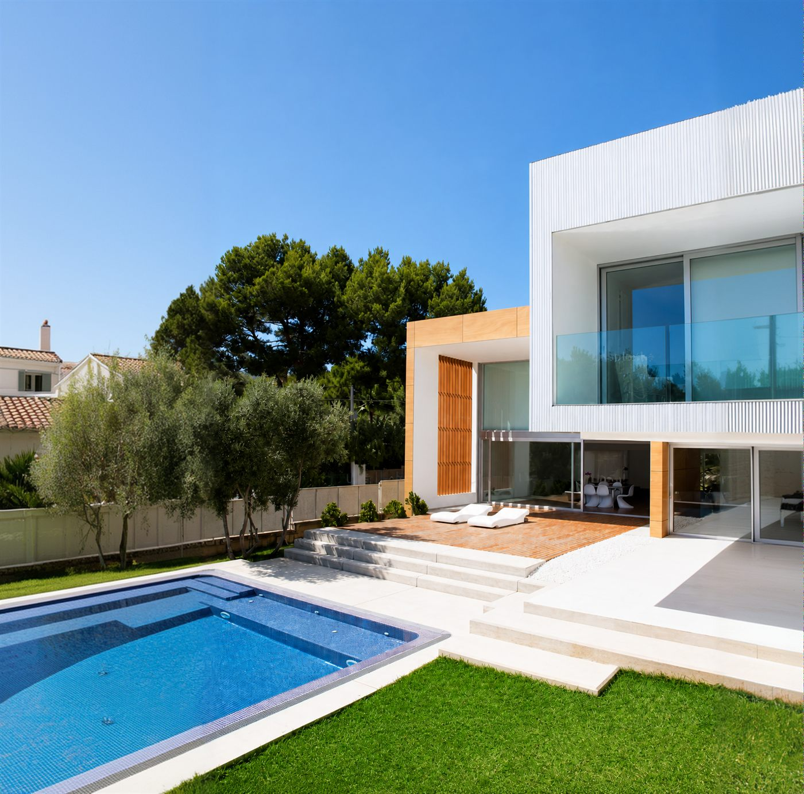

Təmir
Bələdçi
Təmirə hardan başlamaq lazımdır? Tam yol xəritəsi
İlk addımlar, büdcə planı, ardıcıllıq və yeni başlayanların ən çox etdiyi səhvlər. Divarlardan tutmuş son təmizliyə qədər — başlamazdan əvvəl bilməli olduğun hər şeyi bir məqalədə topladıq.
Aysel Həsənova
6 dəq oxu
12 İyun 2026
Bloq
Faydalı məqalələr
Ətraflı bax